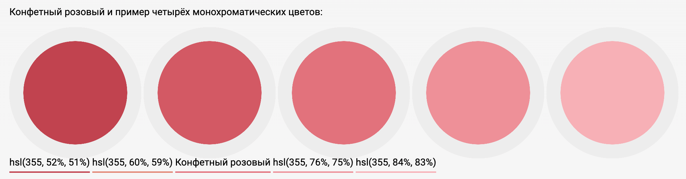

Среда программирования CSS предлагает помимо шестнадцитиричных кодов HEX использовать названия оттенков, поэтому достаточно просто прописать цвет в коде, чтобы CSS-язык «объяснил» браузеру, какой оттенок имелся в виду, но все оттенки имеют названия на английском языке. Тк всего доступно 16777216 тонов, то названия оттенков могут быть самые разнообразные от обчного red #FF0000 (красный), так и seashell #FFF5EE (морская раковина).
Это цвет Bruce Willis #B0E002 ,который был вероятно назван из-за редкого зеленого оттека глаз у актера Брюса Уиллиса
Это цвет Candy #CA0C00 , подтон красного оттенка,производные от красного - дает ассоциацию с "конфетным" цветом
P.S эти 'забаные' названия применимы в только для тега <font color=""> для других тегов с атрибутом color возможно применить только 140 цветов, поддерживаемы CSS, вплывающие в окне-подсказке при написаснии кодаю